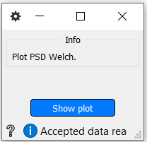
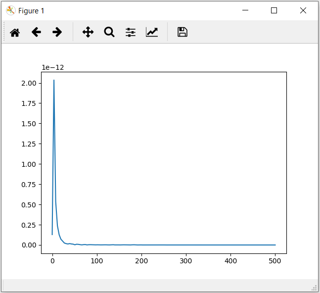

Plot the power spectral density across channels.
Inputs
(psds, freqs)
psds - The power spectral densities.
freqs - The frequencies.
Use

Press the Show plot button to display the graph.

More information here.
Welsch PSD
PlotICA
Resample